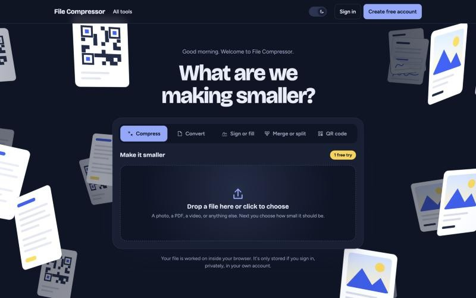
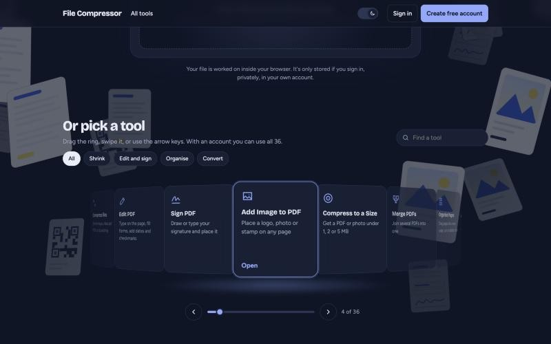

What it does
You drop in a photo, a PDF or a video and choose how small it should be. Beyond compression, the app has 36 tools grouped into shrink, edit and sign, organise and convert.
- Compress photos, PDFs and videos, or squeeze a file under a target size like 1, 2 or 5 MB.
- Convert and resize images between JPG, PNG and WebP, and turn photos into a single PDF.
- Sign PDFs, fill in forms, add images or stamps, and request a signature from someone else by link.
- Merge and split PDFs, reorder or rotate pages, add page numbers and password-protect files.
- Generate QR codes and scan paper pages to PDF with a phone camera.
Privacy by design
Files are processed inside the visitor's browser. Nothing is stored unless the person signs in, and then it is kept privately in their own account. Visitors get one free try before creating an account.
Screenshots

